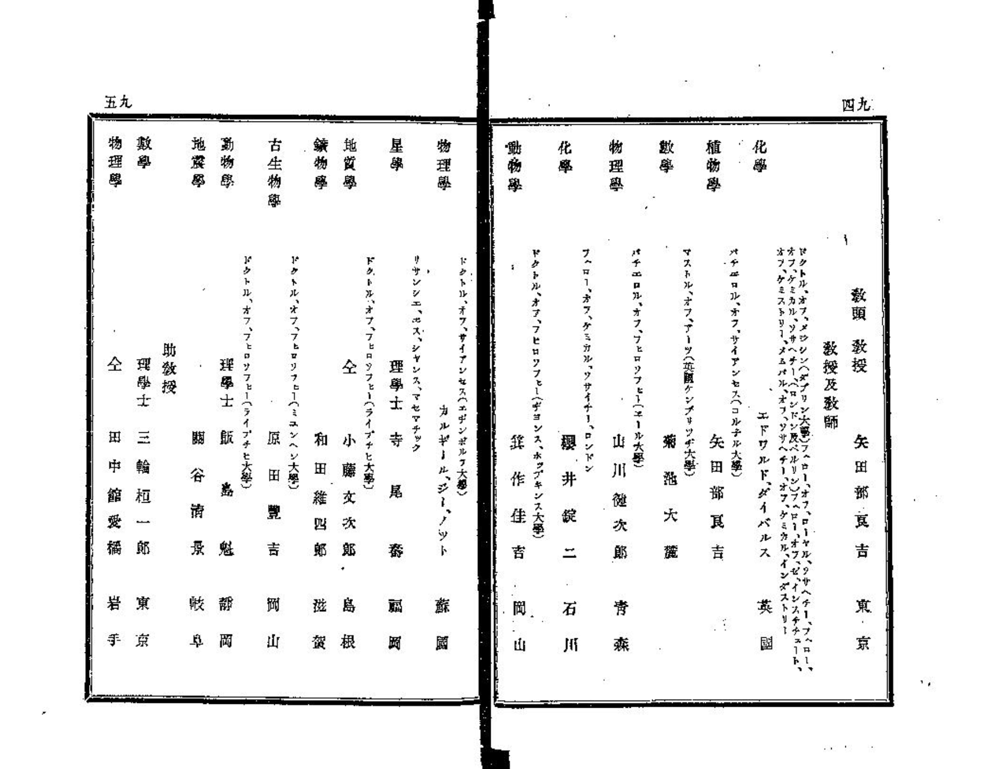
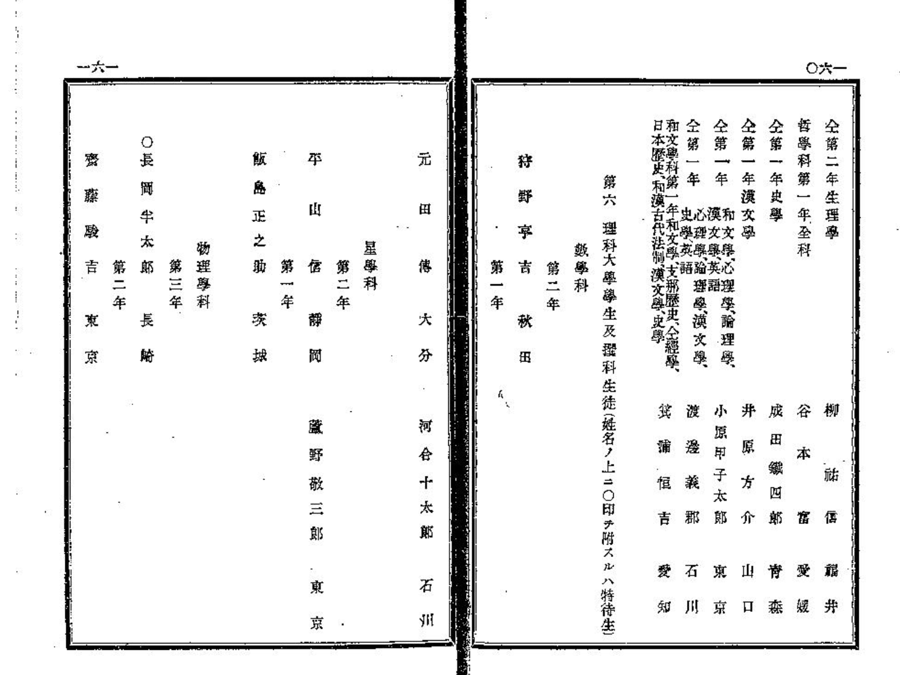
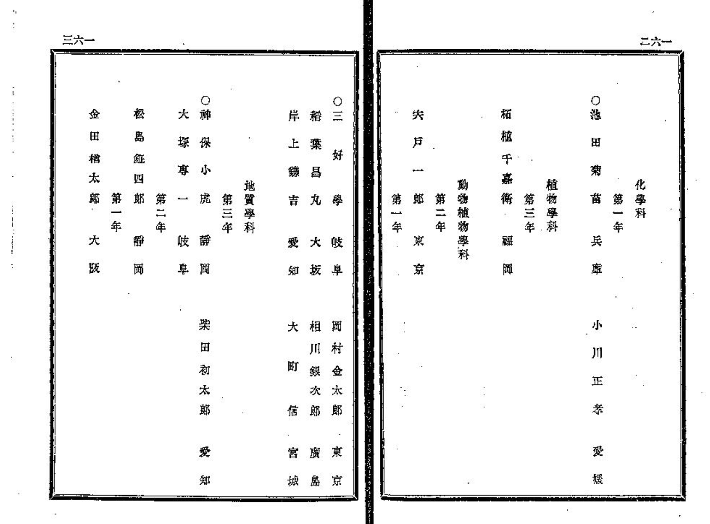
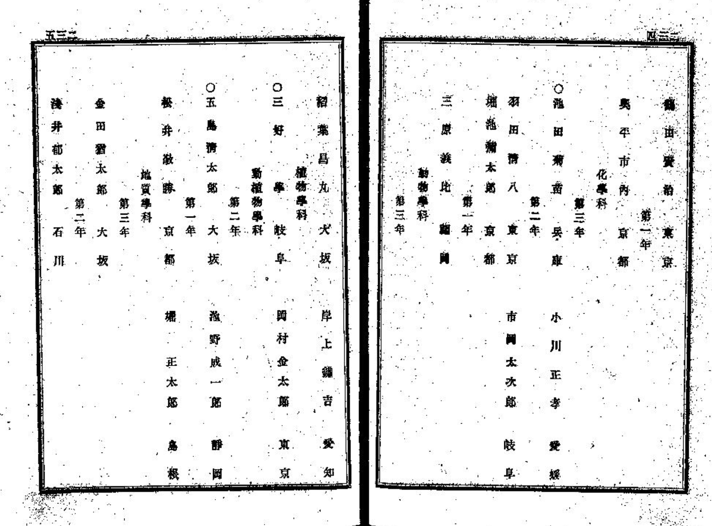
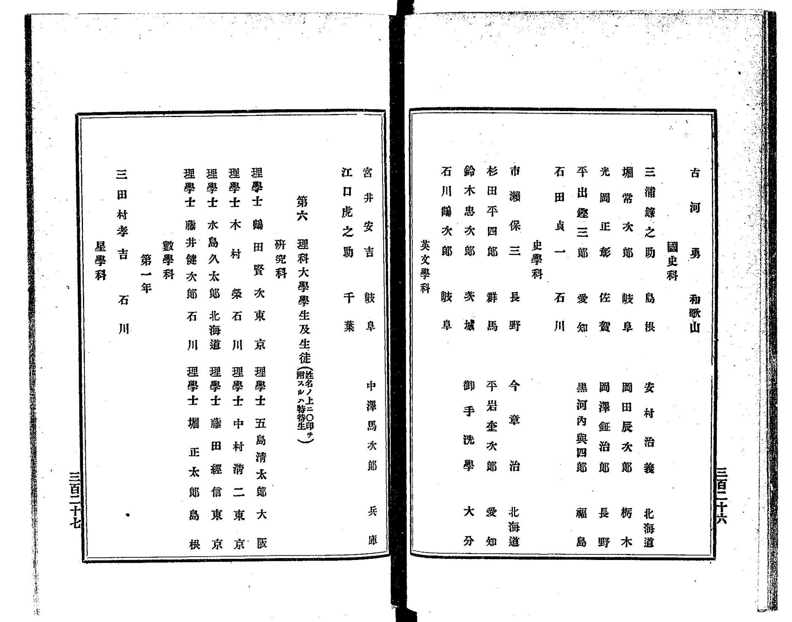
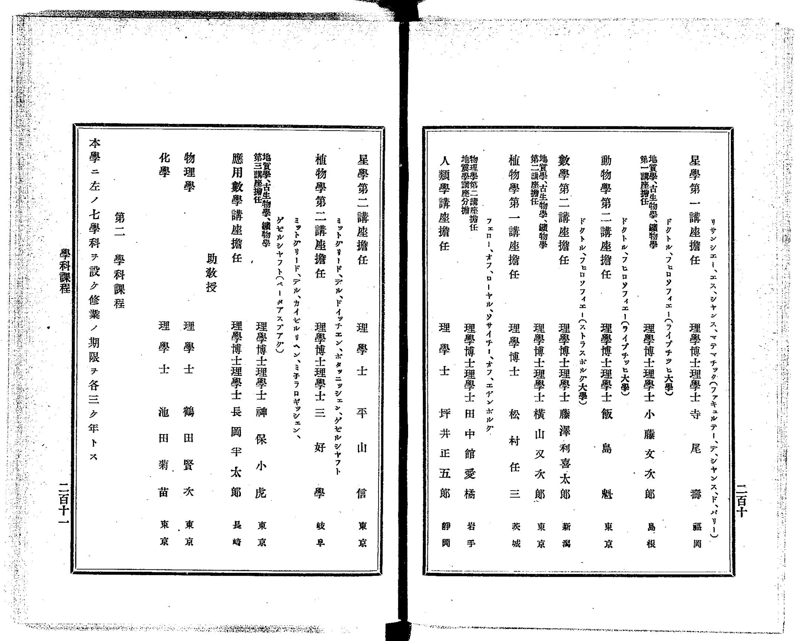

22: First Japanese on Phys. Rev.
Starring


Show notes
目次
Physical Review に最初に投稿した日本人は誰か?
- 44. Tabasheer - Researchat.fm
- 同じく ep. 44 のフォロワー企画として、こちらも面白いです。
【tabasheer】竹が生み出すミルクのような液体｜Eryr13｜note
- 同じく ep. 44 のフォロワー企画として、こちらも面白いです。
- フィジカル・レビュー - Wikipedia
Physical Review Series I はここから見れます。 - K. Tsuruta, Phys. Rev. (Series I) 10, 116 (1900) - Thermodynamic Notes (NO. 10): Revision of Some Thermal Data Concerning Benzene
- K. Tsuruta, Phys. Rev. (Series I) 15, 380 (1902) - Optical Notes (1): On a Spectroscopic Application of Talbot’s Interference Fringes
- K. Tsuruta, Tokyo Sugaku-Butsurigaku Kwai Kiji, THERMODYNAMIC NOTES (No. VIII)
- 卒業生・元教員の在籍記録を調べたい - 東京大学附属図書館
- 帝国大学一覧の検索結果 - 国立国会図書館デジタルコレクション
- 東京帝国大学一覧. 明治19-20年 - 国立国会図書館デジタルコレクション

物理学科のスタッフは山川健次郎、カルギール・ジー・ノット (誰?)、田中舘愛橘
東京帝国大学一覧 明治19-20年より

長岡半太郎は特待生。
東京帝国大学一覧 明治19-20年より。

池田菊苗も特待生。
東京帝国大学一覧 明治19-20年より

鶴田賢次の帝国大学一覧初登場場面。「賢治」となっているが、ページ右上隅に名前が見える。
東京帝国大学一覧 明治21-22年より

鶴田賢次が院生だった頃のもの。
東京帝国大学一覧 明治25-26年より

THERMODYNAMIC NOTES (No. VIII)が出版された年のもの。鶴田賢次は助教授になっている。
東京帝国大学一覧 明治29-30年より
- 泉豊春 (泉斜汀) 帝大教授学生気質 - 国立国会図書館デジタルコレクション
鏡花の弟だから斜汀。近年再評価が進んでいる模様？
より](assets/ep22-Tsuruta-2.png)
- 夏目漱石 吾輩は猫である - 青空文庫
ガラス玉を磨く場面は以下。
「それじゃ君が近頃忙がしい忙がしいと云って毎日日曜でも学校へ行くのはその珠を磨りに行くんだね」「全く目下のところは朝から晩まで珠ばかり磨っています」「珠作りの博士となって入り込みしは――と云うところだね。しかしその熱心を聞かせたら、いかな鼻でも少しはありがたがるだろう。
- 漱石が見た物理学 首縊りの力学から相対性理論まで - Wikipedia
紹介した以外にも、『猫』や『三四郎』には物理の話がいっぱい出てきて面白いです。 - 東京大学大学院理学系研究科・理学部 物理学専攻学位論文
東大理学部物理学科の修士・博士論文の一覧は、1958-2015の間のものが以前は公開されていましたが、今はないようです。国立国会図書館のウェブアーカイブのリンクを貼っておきます。今回のエピソードは国立国会図書館のアーカイブなくしては作れませんでした。ありがとうございます。 - 細谷裕『湯川秀樹博士と大阪大学―ノーベル賞はかくして生まれた』
細谷先生は近日公開の次回エピソードにも出てきます。 - 湯川秀樹『量子力学序説』
湯川関連の出版が多いのは、今年が没後40年だからかもしれません。 - 朝永振一郎 『量子力学 I 』
こぼれノート
- Phys. Rev. の10巻までを目grepしていたら、ロバート・ミリカン - Wikipedia の論文がありました。
R. A. Millikan, Phys. Rev. (Series I) 3, 81 (1895) - A Study of the Polarization of the Light emitted by Incandescent Solid and Liquid Surfaces
R. A. Millikan, Phys. Rev. (Series I) 3, 177 (1895) - A Study of the Polarization of the Light emitted by Incandescent Solid and Liquid Surfaces. II - クヌート・オングストローム (アンデルス・オングストロームの息子)の Minor Contributions というのもありました。
Knut Ångström, Phys. Rev. (Series I) 3, 137 (1895) - Minor Contributions - 他に気づいたこととしては、初期は実験のテクニックとか、デバイス開発したよとかの論文も多いようでした。
お知らせ
- 出演して頂ける方や感想などをお待ちしております。
おたよりコーナーを作りました。質問、感想、要望などお待ちしております。https://t.co/rz0mlRKZU3
— Interaxion Podcast (@interaxion) January 12, 2021
Appendix
- 部品さんが Physical Review ではなく、 Physical Review Letters の創刊号を調べてくれました。 PRLに最初に載った論文ってどんな論文？